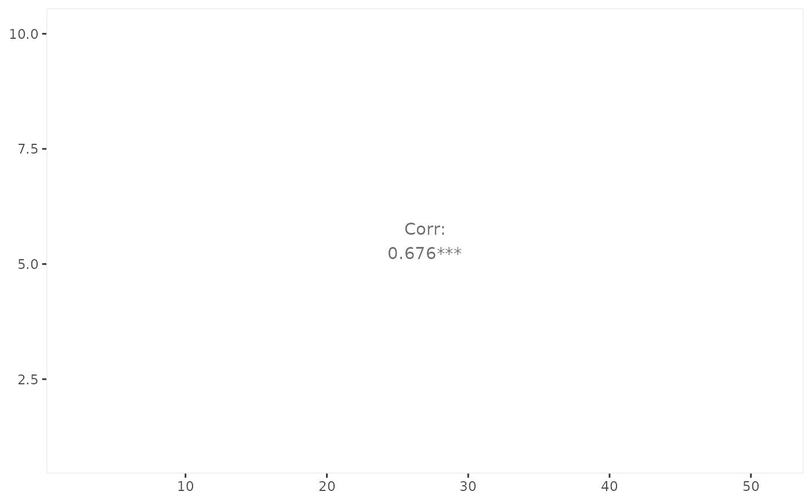
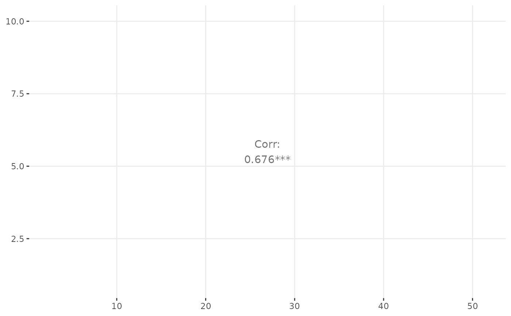
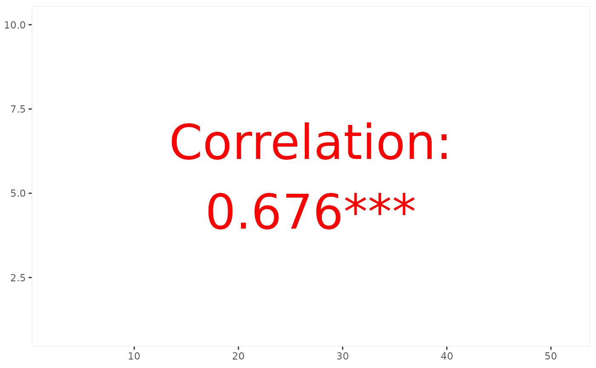
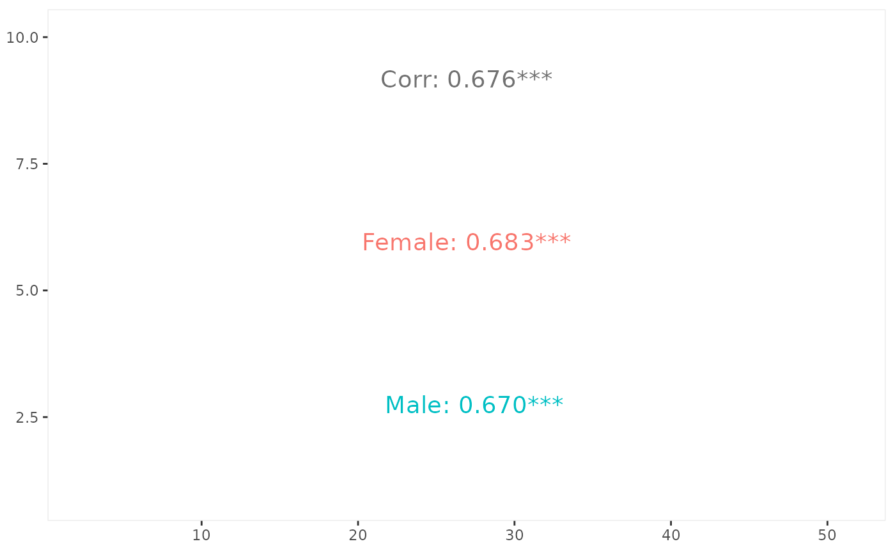

Estimate correlation from the given data. If a color variable is supplied, the correlation will also be calculated per group.
ggally_cor( data, mapping, ..., stars = TRUE, method = "pearson", use = "complete.obs", display_grid = FALSE, digits = 3, title_args = list(...), group_args = list(...), justify_labels = "right", align_percent = 0.5, title = "Corr", alignPercent = warning("deprecated. Use `align_percent`"), displayGrid = warning("deprecated. Use `display_grid`") )
| data | data set using |
|---|---|
| mapping | aesthetics being used |
| ... | other arguments being supplied to |
| stars | logical value which determines if the significance stars should be displayed. Given the
|
| method |
|
| use |
|
| display_grid | if |
| digits | number of digits to be displayed after the decimal point. See |
| title_args | arguments being supplied to the title's |
| group_args | arguments being supplied to the split-by-color group's |
| justify_labels |
|
| align_percent | relative align position of the text. When |
| title | title text to be displayed |
| alignPercent, displayGrid | deprecated. Please use their snake-case counterparts. |
Barret Schloerke
# Small function to display plots only if it's interactive p_ <- GGally::print_if_interactive data(tips, package = "reshape") p_(ggally_cor(tips, mapping = ggplot2::aes_string(x = "total_bill", y = "tip")))# display with grid p_(ggally_cor( tips, mapping = ggplot2::aes_string(x = "total_bill", y = "tip"), display_grid = TRUE ))# change text attributes p_(ggally_cor( tips, mapping = ggplot2::aes(x = total_bill, y = tip), size = 15, colour = I("red"), title = "Correlation" ))# split by a variable p_(ggally_cor( tips, mapping = ggplot2::aes_string(x = "total_bill", y = "tip", color = "sex"), size = 5 ))